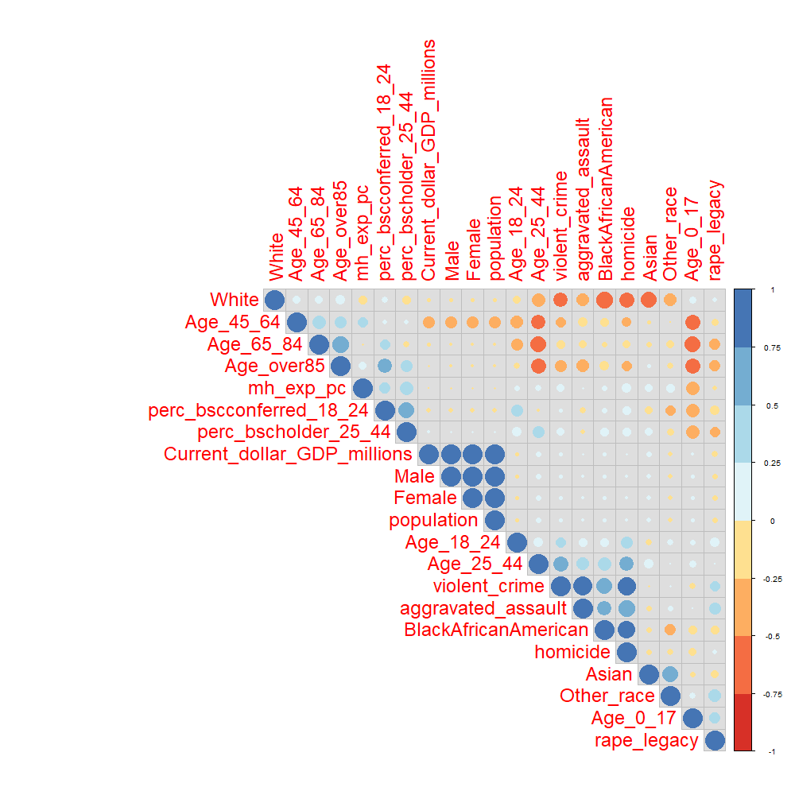

As you may have seen in the section on data, we end up having many features. Although some of them might be irrelevant or redundant. To see that we use a straightforward correlation command; this can be already a step towards the selection of most important variables that we may need for our analysis later.
#> png
#> 2
The main findings are:
Moving forward, having observed the correlations above, we can also look into each variable.
To do so we can look up easily at the outcome of the data-set’s summary.
For age:
| Min. | 1st Qu. | Median | Mean | 3rd Qu. | Max. | |
|---|---|---|---|---|---|---|
| Age_0_17 | 0.1676 | 0.2288 | 0.2401 | 0.2394 | 0.2495 | 0.3150 |
| Age_18_24 | 0.0829 | 0.0967 | 0.0999 | 0.1010 | 0.1032 | 0.1446 |
| Age_25_44 | 0.2308 | 0.2542 | 0.2643 | 0.2662 | 0.2761 | 0.3680 |
| Age_45_64 | 0.1144 | 0.2519 | 0.2623 | 0.2609 | 0.2714 | 0.3122 |
| Age_65_84 | 0.0589 | 0.1075 | 0.1151 | 0.1140 | 0.1214 | 0.1609 |
| Age_over85 | 0.0050 | 0.0151 | 0.0174 | 0.0177 | 0.0205 | 0.0269 |
The highest percentage of population is between 25 and 64 years old while the lowest has more than 85 years.
For race:
| Min. | 1st Qu. | Median | Mean | 3rd Qu. | Max. | |
|---|---|---|---|---|---|---|
| White | 0.2557 | 0.7373 | 0.8339 | 0.8020 | 0.8908 | 0.9654 |
| BlackAfricanAmerican | 0.0041 | 0.0326 | 0.0770 | 0.1145 | 0.1566 | 0.5812 |
| Asian | 0.0060 | 0.0138 | 0.0229 | 0.0372 | 0.0407 | 0.4083 |
| Other_race | 0.0122 | 0.0210 | 0.0273 | 0.0463 | 0.0443 | 0.3396 |
The majority of the population is white, followed by black and African-American.
For crimes:
| Min. | 1st Qu. | Median | Mean | 3rd Qu. | Max. | |
|---|---|---|---|---|---|---|
| homicide | 0.0084 | 0.0269 | 0.0454 | 0.0494 | 0.0611 | 0.3487 |
| violent_crime | 0.8655 | 2.6797 | 3.5792 | 4.0563 | 5.0244 | 15.3711 |
| rape_legacy | 0.0972 | 0.2576 | 0.3131 | 0.3271 | 0.3830 | 0.8914 |
| aggravated_assault | 0.5119 | 1.5712 | 2.2706 | 2.5683 | 3.3108 | 8.0413 |
Remember that crimes are expressed in per 1000 terms.
Homicides are the less common crime, while violent crimes and aggravated assault occur on average to 4 and 2.5 people out of 1000.
For mental health expenditure, education, population and GDP:
| Min. | 1st Qu. | Median | Mean | 3rd Qu. | Max. | |
|---|---|---|---|---|---|---|
| mh_exp_pc | 2.423e+01 | 7.144e+01 | 9.883e+01 | 1.201e+02 | 1.451e+02 | 4.099e+02 |
| perc_bscconferred_18_24 | 1.939e+00 | 4.586e+00 | 5.505e+00 | 5.661e+00 | 6.397e+00 | 1.374e+01 |
| perc_bscholder_25_44 | 1.948e+01 | 2.572e+01 | 2.987e+01 | 3.056e+01 | 3.408e+01 | 6.535e+01 |
| Current_dollar_GDP_millions | 2.266e+04 | 7.300e+04 | 1.738e+05 | 5.605e+05 | 3.818e+05 | 1.678e+07 |
| population | 5.091e+05 | 1.715e+06 | 4.352e+06 | 1.173e+07 | 7.092e+06 | 3.160e+08 |
In this last summary table, it’s worth mentioning that